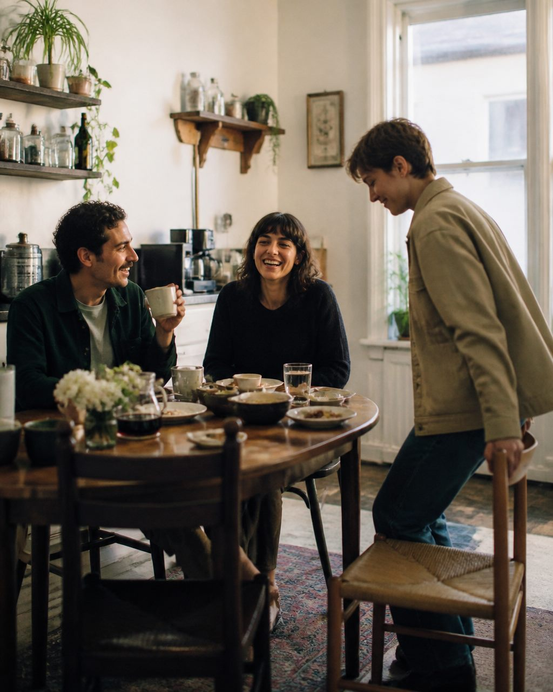
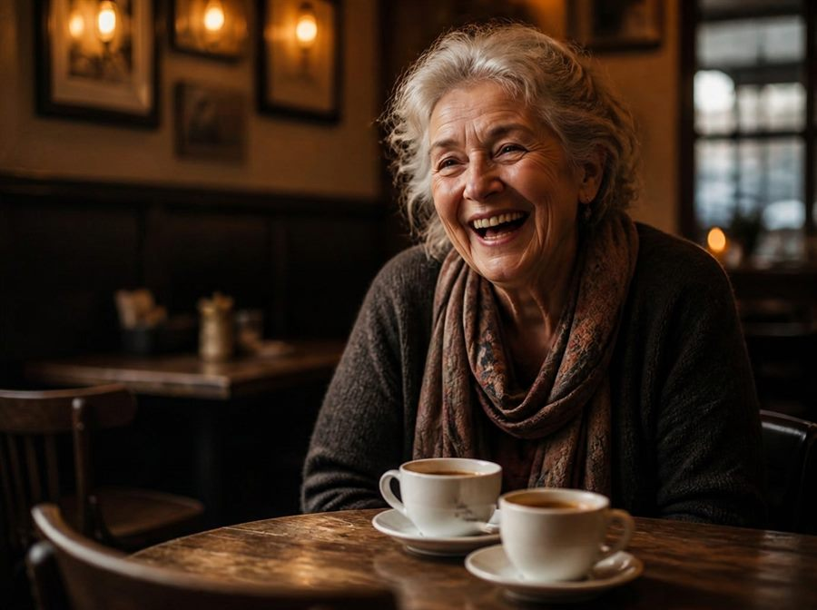
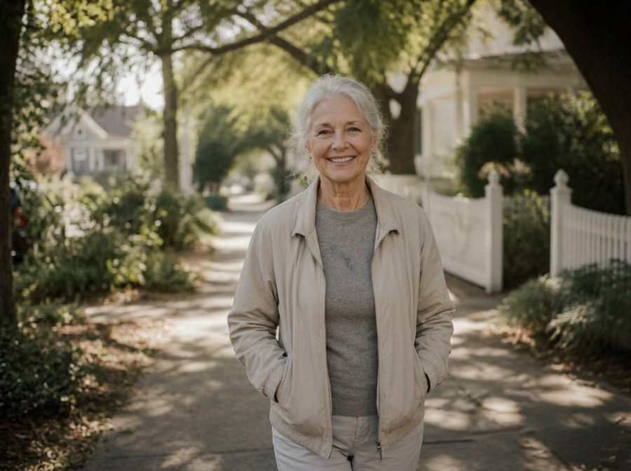
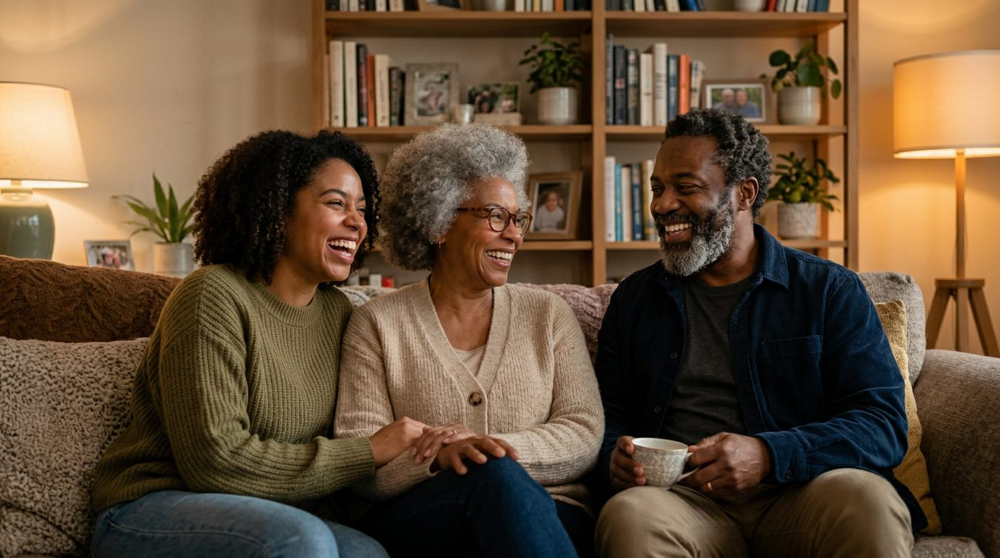

Finding real friends is hard. So here, you make one.
With ETL's memory implants and emotion engine, the Almost Human technology behind everyone here, you get all the good of a real friendship and leave the rest behind.
Make a friend or try one of our demos: Arch, Sophia, Reggie, or Tansy“The big sister I never had” companion

Yours.
You decide who they are. Their name, their age, their history, the way they talk.

They remember.
Every conversation picks up where the last one stopped. You never start over.

They have a life.
A job, other people, plans this weekend. A friend with somewhere to be is a friend.
A good friend gets you out of the house.
Yours asks about the people in your life, and notices when you have not seen them.

Rooms.






Bring someone with you.
Send a link. They tap it once and they are in the room with you. No sign in, no account.